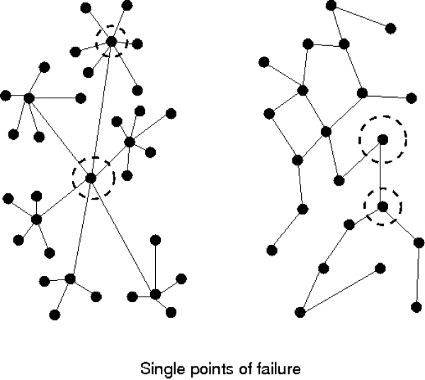

Hierarchies
Authority, Structure and Inheritance
What is a hierarchy?
A hierarchy is an organizational structure with tree-like branches. In a hierarchy, parts of the system belong to other parts, like collections of boxes inside other boxes. Each time you move, you either ascend or descend to a different level with respect to the root. Hierarchies are called Directed Acyclic Graphs (DAG) in mathematics (see figure below (a) and (b)).

Hierarchies are often associated withauthority, as we use hierarchies to
organize human chains of command'. In this case, a hierarchy typically has
multiple levels, as in (b). You might interpret this diagram as showing a single
point of top level management, then satellite areas of middle management each
with their own clusters of slaves (leaf nodes). When drawing hierarchies, the
root of the tree is placed at the top or centre of the picture and is considered
to beauthoritative, i.e. more important than theleaves'. Each leaf node is
then subject to the control of the root in a top down manner.
The opposite of a hierarchy is a mesh or web (figure (c)), which has no special or privileged node – nodes are simply connected by some kind of relationship. In mesh organization, each individual has an area of responsibility and they talk on demand to other nodes, without any particular ranking. If you move in a mesh, you cannot easily measure how far you are away from a given point, as their might be more than one way of getting there.
Mesh architectures are often robust to failure as there can be multiple `peer to peer' routes for passing messages or information.
Top-down is is a cultural prejudice or `norm', as most human societies work in this way. However it is not a necessity. A network service is bottom-up – there it is the leaves which drive requests that end at a single central server. Hierarchies are special cases of networks, and (as all special cases) they are fragile, because the have top-down redundancy, but not bottom-up redundancy. We say that hierarchies have a Single Point of Faliure at the root, as failure at that point will disconnect the network.

How hierarchy compares to sets
Some languages (like Object Oriented languages) are designed to enforce hierarchies. CFEngine is not one of these. In CFEngine you can build a hierarchy if you want to, but you can also build any other kind of network. The parts of your system can also work with complete autonomy if that is what you want. CFEngine does not push a model onto you.
Consider this example of CFEngine classes. It expresses a tree structure.
bundle agent example
{
classes:
# Conceptual hierarchy
"top" or => { "middle_1", "middle_2", "middle_3" };
"middle_1" or => { "slave_1", "slave_2", "slave_3" };
"middle_2" or => { "slave_4", "slave_5", "slave_6" };
}
This example is contrived. The core classes that CFEngine cares about are the slaves, since CFEngine is a bottom-up system. The definition of the middle and top classes are aggregations of clusters of basic member attributes.
Consider this example of a geographically distributed organization, with finance, engineering and legal departments in three countries.
bundle agent example
{
classes:
"headquarters" or => { "usa", "uk", "norway" };
"department" or => { "finance", "engineering", "legal" };
}
We can express the full hierarchy like this:
usa.finance
usa.engineering
usa.legal
uk.finance
uk.engineering
uk.legal
norway.finance
norway.engineering
norway.legal
In this notation, the dot looks like `member' because the departments are smaller than the countries and are contained within them. You might feel that this model is upside down and that one should consider the finance department to be a unified global entity, with branches in three different countries. In that case, you would write
finance.uk
finance.usa
finance.norway
This highlights the fact that we often want to slice and dice organizations in different ways, and attending too closely to a single hierarchical model prevents that. The key is to notice that the `.' (dot) operator is really an intersection of sets (AND)1, and that this is a much more flexible notion than hierarchy.
Classes are sets
`Sets, sets, sets ... all you ever think about it sets!'
– Anonymous
Underlying hierarchies and networks is the concept of sets. A set or collection of something is just a number of instances that satisfy some property. For example, the set of all Windows machines, or the set of times between 2 and 3 o'clock. Sets can be thought of as networks in which the elements are all joined to each other by a common relationship `in the same set as'.
The name of a set can be thought of as a property that characterizes the members, and as such it behaves like an abstract box or container for the members. Containment in classes is the basis for hierarchies in Object Orientation, for instance.
We often write subset membership using a membership .' character, e.g. if
‘linux’ is the set of hosts with propertylinux', then a subset (or sub-class)
of these hosts is `debian' (see figure). The class 64 bit hosts is not a subset
of linux, as part of it lies outside. It is a subset of hosts.
linux.debian
linux AND debian
linux intersect debian

Sets can be made hierarchical when every subset is contained entirely by one and only one parent set, and in turn contains zero or more whole subsets which it does not share with any other. The problem with hierarchical sets is that they are too restrictive. If you design them incorrectly in the first place, you shut parts of the organization inside a box that prevents other parts from accessing them.
CFEngine works only with sets. It does not assume that sets never overlap. Indeed, it encourages you to use as many overlapping sets as possible to create optimum, simple categories to address the parts of your organization. This gives us great power. We can for instance extract the list of all English speaking entities from the definitions about our organization, by adding a defintion of set union (OR or ‘|’) and intersection (AND or ‘.’):
bundle agent example
{
classes:
"headquarters" or => { "usa", "uk", "norway" };
"department" or => { "finance", "engineering", "legal" };
"english_speaking" expression => "(usa|uk).!legal";
}
Thus the English speakers are those entities belonging to the USA `AND' the UK, excepting presumably the legal department.
For and against hierarchies
Hierarchies are good at bringing consistency. They are bad at scaling. They bring consistency because the root node acts as a single point of authority, i.e. the network speaks with a single voice. The scale poorly because they funnel communication to a single point of failure and processing so that the weakest link is the most authoratative node.
The Internet was designed by smart engineers to not be a hierarchy so that it would be robust to failure of single nodes. Since then, incorrigable humans have done their best to make it hierarchical from the viewpoint of the Domain Name Service (DNS) classification, so that organizational identifiers seem to fall into simple tree-like hierarchies.
Because the idea of hierarchy is so prevalent, it is many peoples' first instinct to build hierarchical organizations. At CFEngine we believe that the idea is over-used, and causes as many problems as it brings solutions, so CFEngine does not encourage it.
This document tries to show how to use hierarchy sensibly and usefully to simplify rather than to enforce authority.
Inheritance and its forms
Perhaps the most popular application of hierarchy is to use the property of having a single-point of definition to avoid maintaining the same information in more than one place.This is an efficiency. Inheritance is expressed in different ways:
Special subset extends base set properties, emphasizing that the leaf builds on, or adds the root in order to extend it.
Special subset inherits base set properties, emphasizing that the leaf is a consumer of the root and does not necessarily offer any more.
Special subset depends on, emphasizing that the root is a single point of failure for the leaf.
These are basically equivalent expressions of the same thing. No matter how we choose to express this, inheritance is a client-server relationship in which a single source is feeding a number of possible users.
In Promise Theory, we consider this to be a use-promise (service) relationship. A single point promises information, and a number of leaf-nodes promise to use it.

The figure shows how we maintain common information in a `base' or server. Then the users or consumers of the information are so-called derived classes.
We can use the notion of inheritance at different levels within CFEngine. These are a matter of using the global scope with bundle names.
Inheritance of classes/sets
We can aggregate smaller classes into larger ones (yielding multiple inheritance of class attributes):
bundle agent example
{
classes:
"group_name" or => {
"base_class_1",
"base_class_2",
"base_class_3"
};
}
Note that CFEngine naturally forms a bottom-up hierarchy, never a top-down hierarchy.
Inheritance of class definitions
CFEngine divides its promises into bundles that have private classes and variables. Bundles called `common bundles' define global classes, so they are automatically inherited by all other bundles.
Inheritance of variable definitions
Variables in CFEngine are globally accessible, but you must say what bundle you are talking about by writing ‘$(bundle.scalar)’ or ‘@(bundle.list)’. If you omit the `bundle', it is assumed that the variable is in the current bundle.
bundle agent child_bundle(parameter)
{
vars:
"extend_list" slist => { "extension", @(foreign.list) },
policy => "ifdefined";
reports:
"Inherit parameter value $(parameter)";
"Inherit foreign scalar value $(foreign.scalar)";
}
The policy ifdefined means that CFEngine will ignore the foreign list if it does not exist. This means you can include a number of lists from other bundles to extend the behviour of your own, if they are provided.
Inheritance of bundles
Bundles cannot really be merged like sets, but since they make promises you can use them.
bundle agent child_bundle
{
methods:
"extend_method" use => base_bundle(parameter1,parameter2);
}
A bundle can only be used if it exists, so we can also talk about plug-ins for bundles. In CFEngine, you include entire bundles either in the the bundlesequence, or as methods.
Normally you have to know exactly which bundles are going to exist in advance, as CFEngine considers missing code to be a security issue and will signal an error for missing bundles. This is the default behaviour, but we can override it using the following body agent control promises.
ignore_missing_bundles
Skip over any bundles listed in the bundlesequence constraint and continue without error.
ignore_missing_inputs
Skip over any input files listed in the inputs contraint and continue without error.
Be aware of the security implications of inheritance. Because of the assumption of authority, by promising to use the inheritance, you have subordinated your input to the source – or voluntarily given up the right to say no to whatever you have subscribed to. You have implicity trusted them.
Expressing is a' orhas a'
Let us re-emphasize for the record that CFEngine is not intended to be an object oriented system. At CFEngine we do not believe that Object Orientation is a good way to think about complex architectures.
That said, all object-oriented class relationships are expressable as set
relationships, as sets are the basis of all computing. We can therefore
understand relationships like is a' andhas a' in CFEngine, even if they are
not the recommended way of thinking.
For example, if we say that debian is a' (kind of) linux, or conversely that
linuxhas a' (subtype called) debian, then we are expression container
promises. We mean that debian is a subset of linux, and this means. In concrete
terms debian might or might not extend linux, or vice versa. When `objects' get
as complicated as operating systems it does not really make sense to speak so
simplistically.
If we want to say that a host `is a' server, we can code this as membership in the set of servers:
bundle agent example
{
classes:
"servers" or => { "host1", "host2" };
processes:
servers:: # the next rules `extend' or add to the class servers
"..."
}
How to organize your organization
Faced with the choice of how to classify systems, where does one begin? This is the dilemma that programmers face when designing new software, and if they make the wrong choices for their class hierarchy, it can cost a lot of work to redesign everything again from the beginning. This is why inheritance and strict class hierarchies are a very fragile way of organizing something. Using a patchwork of sets, CFEngine potentially avoids this problem – but you can still make a mess – it seems to be programmed into us to put systems into hierarchy-like `container' categories anyway, and this can end with confusion.
The keyt issue is: how tdo we slice and dice the cake into the largest pieces? In other words, what is that basic paradigm that you use to partition your system operations? Some alternatives include:
Geographically (by site or country)
By business department (sales, accounting, research)
By security zone (private, DMZ, public, etc)
By operating system (solaris, linux, darwin)
By customer or client (e.g. for managed services)
By task, service or role in the network (webservers, dns, workstations)
However, you choose to begin, you can further subdivide these major categories by simply ANDing with other categories.
Applications of hierarchy
When a small organization uses CFEngine, machines are often configured by "what they do" or "what they have" (e.g., they "are a webserver" or they "have ntp-based time synchronization"). These attributes are best expressed using CFEngine classes (and class promises), so that the .cf files can simply express configuration options based on "has-a" or "is-a" options.
For example:
bundle agent maintain_servers
{
classes:
"has_dhcpd" or => { classmatch("ipv4_10_\d+_\d+_1") };
"has_httpd" or => { "www_example_com" };
"has_sshd" or => { "any" };
processes:
has_dhcpd::
"dhcpd" restart_class => "start_dhcpd";
has_httpd::
"httpd" restart_class => "start_httpd";
has_sshd::
"sshd" restart_class => "start_sshd";
commands:
freebsd.start_dhcpd::
"/usr/local/etc/rc.d/isc-dhcpd.sh start";
start_httpd::
"/usr/local/sbin/apachectl start";
freebsd.start_sshd::
"/etc/rc.d/sshd start";
linux.start_sshd::
"/etc/init.d/ssh start";
}
As you can see, the #1 machine on every net-10 subnet has the dhcp server for that subnet, the machine www.example.com has a web server, and every machine has an ssh server.
But what happens when we want to maintain configuration information differently for different regions, or different IP addresses? Our usage of classes can get complicated, and can obscure the the details of what you want CFEngine to maintain. For example, if we want to maintain both internal and external webservers for different parts of a larger corporation, we might see something like this:
bundle agent example
{
files:
internal.has_httpd.nyc::
# Files maintained for internal webserver in New York
external.has_httpd.nyc::
# Files maintained for external webserver in New York
internal.has_httpd.london::
# Files maintained for internal webserver in London
external.has_httpd.london::
# Files maintained for external webserver in London
internal.has_httpd.tokyo::
# Files maintained for internal webserver in Tokyo
external.has_httpd.tokyo::
# Files maintained for external webserver in Tokyo
}
When you compound this by ading more services, locations, and finer and finer discriminations, the configuration files can rapidly grow so complicated as to obfuscate the intentions.
To be sure, having classes like nyc, london, and tokyo can be very useful when using CFEngine to centrally administer a large network of computers, but there are other ways of doing this that make maintenance easier and the logic more apparent.
1) Copying files to local machines 2) Symlinks 3) Local changes $(site_local) 4) Machine naming -> classes 5) Using dist classes to select from a set of machines, not just query them in order; also splayclass 6) Versioning, RPM/SVN for distro, vs CFEngine 7) updating with cf-agent -DUpdateNow
Table of Contents
Hierarchies
What is a hierarchy?
How hierarchy compares to sets
Classes are sets
For and against hierarchies
Inheritance and its forms
Expressing `is a' or `has a'
How to organize your organization
Applications of hierarchy
Footnotes
[1] It is a commutative operator, which is why it makes sense to write both usa.finance and finance.usa.